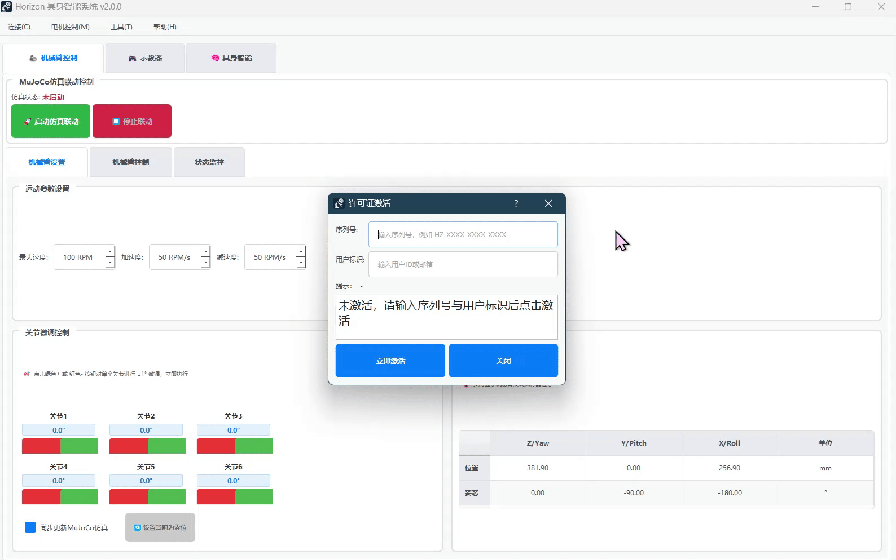
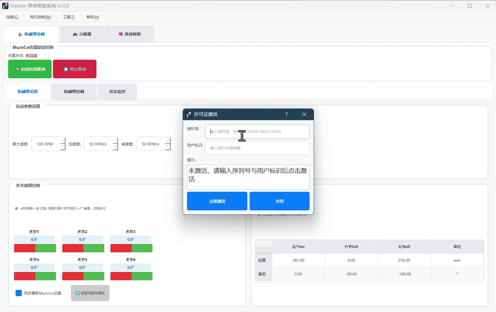

序列号与激活¶
本页面介绍如何在程序界面中完成激活，并说明激活后的离线使用方式。
序列号是唯一的不可复制、不可多设备共享

首次激活演示
激活入口¶
- 菜单：帮助 → 许可证
- 在弹出的窗口中输入你的序列号与用户标识（例如手机号或邮箱），点击“立即激活”
- 成功后，窗口显示“激活成功”，下次启动将自动生效

序列号已使用（超限）
离线使用¶
- 首次激活成功后，系统会在本机保存一个激活凭据
- 之后即使没有网络也可以正常启动与使用
常见提示¶
- “提示：未激活，请输入序列号与用户标识后点击激活”
- 按要求填写并点击“立即激活”
- “提示：已激活（本机）”
- 说明此计算机已经激活，无需再次操作
- “提示：设备数量已达上限”
- 当前序列号可绑定的设备数量已用尽，请联系管理员
若遇到无法激活或多次失败，请到“故障排除 → 激活相关问题”查看处理方法，或联系技术支持。